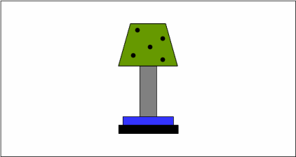

Data and Analysis Unit: EXE9
Last update: 2014-10-28 by Andy Wills
Description
Match-to-standards classification task with instructional manipulation,
reported in Wills et al. (2013, QJEP, Experiment 4).
This DAU contains stimulus files, raw data,
and an analysis script, in open
cross-platform formats (see the file format notes)
Citation
The APA-format citation for this resource is:
Wills, A.J. (2014). Data and Analysis Unit: EXE9. Retrieved from http://www.willslab.co.uk/exe9
If you make use of these resources, please drop me an email: andy@willslab.co.uk.
Resources
- exe8stim.tbz (44 KB) - Stimulus image files (from EXE8).
- exe9data.csv (83 KB) - Trial-level raw data. Column headings are as follows:
- cond: Experimental condition
- subj: Participant number (unique within EXE9)
- block: Experiment block
- trial: Trial number (resets between blocks)
- stim: The to-be-classified stimulus presented, numbers refer to stimulus file names in exe8stim.tbz
- resp: Participant's classification response (A = category A, B = category B)
- rt: Participant's reaction time for classification response (in milliseconds)
- exe8classic.csv (1 KB) - Subject-level raw data for the classic "combined"
analysis used in match-to-standard tasks. This is where each block is classified as UD, OS, or Other, on the basis of
both the objective sort produced, and the participant's description of that sort (see paper for details). Participants'
descriptions were not archived for this study.
- exe9analysis.R (4 KB) - R script for the analyses of Wills et al. (2013, QJEP).
Further resources
The following resources are not formally part of the archive, either because they do not use open formats,
or because they have not been thoroughly bug-checked, or both. They are provided in case others
find them useful, with absolutely no warranty!
- exe8eprimeMTS.tbz (15 KB) - Code for running the Experiment 4
match-to-standards task under
E-prime 2.0 (from EXE8). Developed from original code used in experiment, which was E-Prime 1. This E-prime 2 version has not
been thoroughly bug-checked.